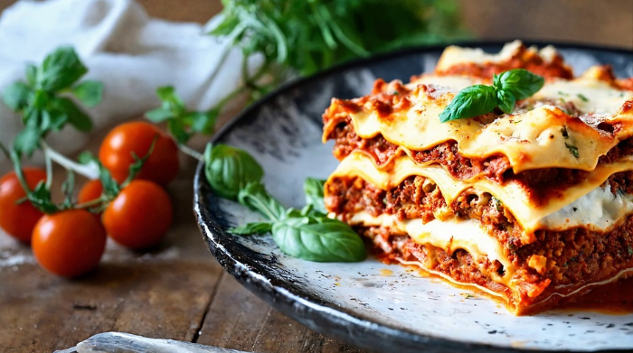

Lasanga Recipe

Description
Lasagna is a classic Italian dish made of layers of flat
pasta sheets, rich meat or vegetable sauce, and creamy cheese. Typically
baked until golden and bubbly, it's a hearty, comforting meal with deep
flavors. The combination of tangy tomato sauce, seasoned meat, and melted
cheese makes it a favorite for family dinners and gatherings. Variations
include vegetarian options with spinach or eggplant, or different cheeses
like ricotta and mozzarella. It's a satisfying dish that's loved worldwide
for its warmth and taste.
Ingredients
- 12 lasagna noodles (pre-cooked or no-boil)
- 1 lb (450g) ground beef or ground turkey
- 24 oz (680g) marinara sauce or tomato sauce
- 2 cups shredded mozzarella cheese
- 15 oz (425g) ricotta cheese
- 1 egg
- 1 cup grated Parmesan cheese
- Salt and pepper to taste
Steps
-
Preheat Oven: Preheat your oven to 375°F (190°C).
-
Cook Noodles: Boil the lasagna noodles according to
package instructions (skip if using no-boil noodles).
-
Cook Meat: In a pan, cook the ground beef with chopped
onion and minced garlic until browned. Drain excess fat.
-
Add Sauce: Stir in marinara sauce to the meat and
simmer for 10 minutes. Season with salt and pepper.
-
Prepare Cheese Mixture: In a bowl, mix ricotta cheese,
egg, and 1/2 cup of Parmesan.
-
Layer Sauce: Spread a thin layer of meat sauce on the
bottom of a 9x13 inch baking dish.
-
Add Noodles: Place a layer of lasagna noodles over the
sauce.
-
Layer Cheese: Spread a portion of the ricotta mixture
and sprinkle with mozzarella.
-
Repeat Layers: Repeat the layers (sauce, noodles,
cheese) two more times, ending with a final layer of meat sauce and
remaining mozzarella and Parmesan on top.
-
Bake : Cover with foil and bake for 25 minutes, then
uncover and bake for an additional 20 minutes until golden and bubbly.
Let it rest for 10 minutes before serving.